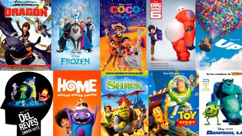
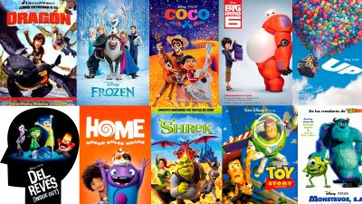

Mundo Cine, lo mejor de cine en un sólo sitio
Rick y Morty
Rick es un científico anciano y desquiciado que se ha reunido recientemente con su familia. Pasa la mayor parte de su tiempo guiando a su nieto Morty en aventuras extraordinarias y peligrosas, a través del espacio y en universos paralelos. Sumado a la vida familiar ya inestable de Morty, estos eventos solo generan más estrés para Morty, en el hogar y en la escuela...
Géneros:
Acción & aventuras, Animación, Comedias, Sci-Fi & Fantásticas
Actores:
Justin Roiland, Chris Parnell, Spencer Grammer, Sarah Chalke
Puntaje:5/5
The Mandalorian
Después de las aventuras de Jango y Boba Fett, surge un nuevo héroe en el universo de Star Wars. La trama, ambientada entre la caída del Imperio y el surgimiento de la Primera Orden, sigue los viajes de un solitario cazarrecompensas a los confines de la Galaxia, lejos de la autoridad de la Nueva República.
Géneros: Acción & aventuras, Sci-Fi & Fantásticas
Actores: Pedro Pascal Puntaje: 4/5
South Park
El pequeño pueblo de South Park en Colorado es el escenario de las aventuras de Cartman, Stan, Kyle y Kenny, cuatro niños con un lenguaje algo... ¡peculiar!
Géneros:
Animación, Comedias
Actores:
Trey Parker, Matt Stone, April Stewart, Mona Marshall
Puntaje: 4/5